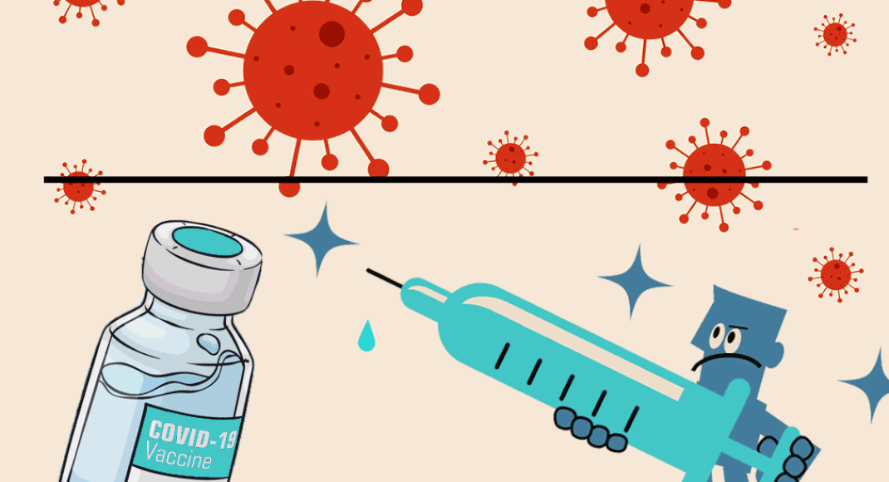

SMART SALINE MONITIORING SYSTEM
Hello There
kishan Rayanal 2SD18CS047
Pruthviraj Horadi 2SD18CS131
Under the guidance of
Prof. Nita Kakhandaki
Table Of Content
About Arduino UNO
what is smart saline monitioring system?
Driving of this Project!!
Parts Used
Connectivity
Flowchart with pseudo code
Conclusion
What is Arduino?
It’s a microcontroller board which contains power supply, USB port and Atmel microcontroller chip.
Types of Arduino...
Arduino UNO
Arduino MEGA
Arduino NANO
Arduino MINI
About Arduino UNO
The Arduino Uno is an open-source microcontroller board based on the Microchip ATmega328P microcontroller and developed by Arduino.cc. ... The board has 14 digital I/O pins (six capable of PWM output), 6 analog I/O pins, and is programmable with the Arduino IDE (Integrated Development Environment), via a type B USB cable.what is smart saline monitioring system?
Driving of this Project!
how much is it important to doctors and nurses?
The device aims to fully automatic the process with requirement of almost no supervision externally. This helps to get rid of human errors and also provides a very reliable and highly efficient industry ready device.
Parts used in the Project
Arduino UNO
Load cell
HX711
LCD Display
Buzzer

Connectivity
Flowchart
pseudo code
Conclusion
It will save the life of the patients. This will reduce the stress in continual monitoring by the doctor or nurse at an affordable cost
saline level monitoring system provides more flexibility to doctors, thereby the patients caring is enhanced. Hence it saves lots of time for doctor or nurse who is on duty
Thank YOU
stay safe and get vaccinated whenever you seek an opportunity